来自星星的练习题二键盘流量分析
这个直接按老师教的步骤走就是了。
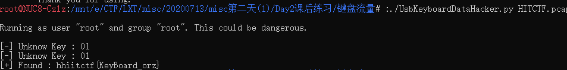
1 | tshark -r HITCTF.pcap -T fields -e usb.capdata > usbdata.txt |
先用tshark拿到USB数据。
然后直接丢脚本里面跑。
但是。。老师的脚本好像有问题呀。
用了同事发的脚本。。。
1 | ./UsbKeyboardDataHacker.py HITCTF.pcap |
一步就出来了
hhiitctf{KeyBoard_orz}
流量分析1—666
题目是666.pcapng。嗯。不管怎么样吧先找flag。
找了半天，虽然有flag.txt的列目录。但是经过查找没有出现flag.txt相关的文件。
那就考虑666相关的吧。
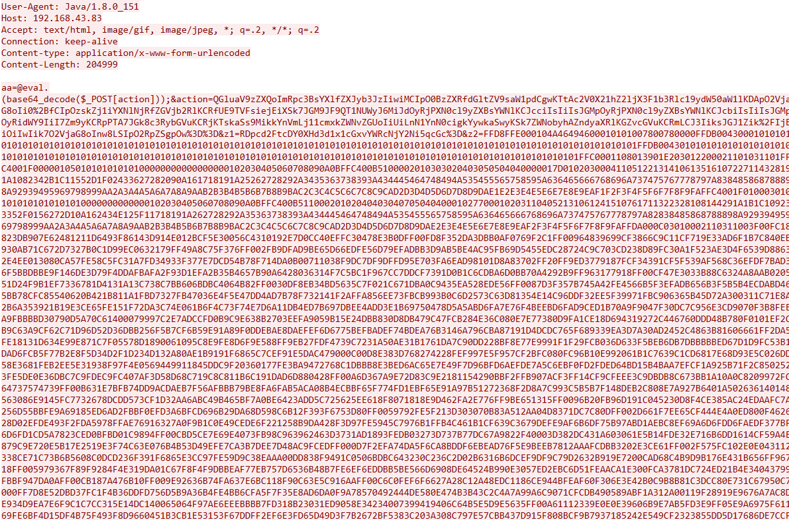
找到一个666.jpg相关的上传代码。难度Flag不是从服务器上获得的而是从客户端上传的。
恢复并提取关键代码。
1 |
|
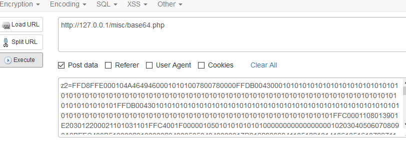
提交一下，成功生成了图片。
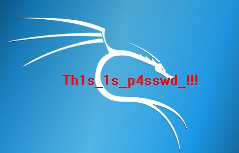
1 | foremost 666.pcapng |
分离出压缩文件，输入密码。得到flag
flag{3OpWdJ-JP6FzK-koCMAK-VkfWBq-75Un2z}
拿到flag。
流量分析2—backdoor
直接搜索flag。卧槽这个脑回路清奇。
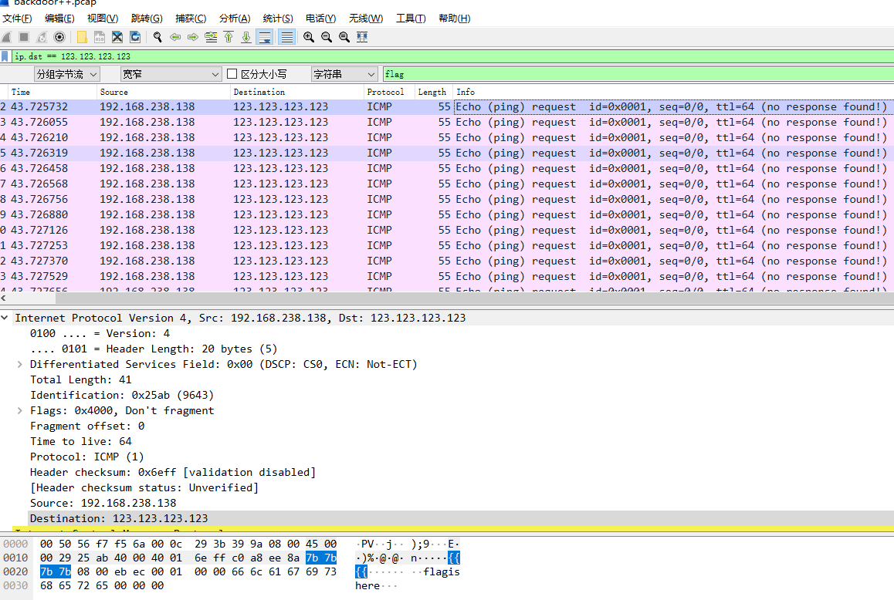
找到这个提示flag is here。
针对这个IP地址
1 | ip.dst == 123.123.123.123 |
然后按时间排序，看看有什么。
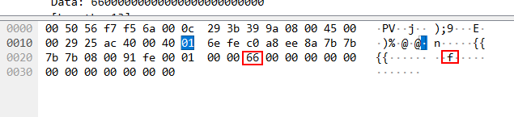
看了一圈，看样子flag在每个数据包的第2B位。
本想写一个脚本的。发现读取pcap的脚本好复杂。有空再搞吧。
先拿到flag
flag{Icmp_backdoor_can_transfer-some_infomation}
明文攻击1
看样子这题比较简单呀。
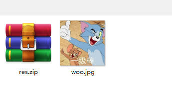
第一步
先看看图片里有啥东西吧。（自从学了CTF，图片就再也不是正常的图片了）
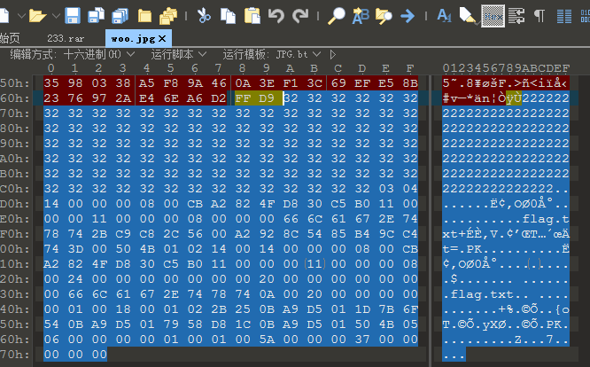
果然有东西。
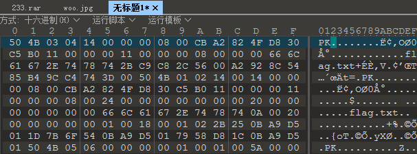
将最后一段代码复制出来恢复成zip文件
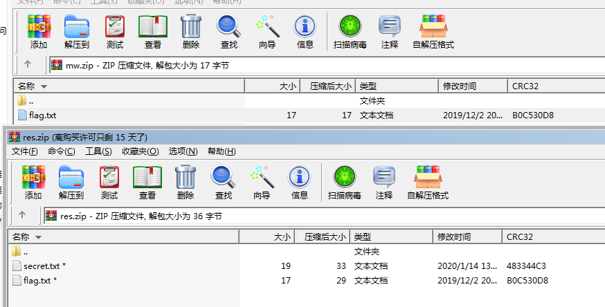
完美恢复，开始明文攻击。
内存取证
从内存中扣出数据
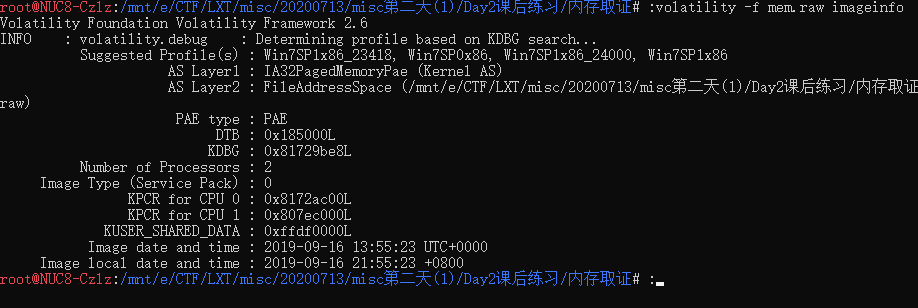
1 | volatility -f mem.raw imageinfo |
得到的系统系统
1 | volatility -f mem.raw --profile Win7SP1x86_23418 pslist |
读取内存找flag
查看操内存中运行的程序信息
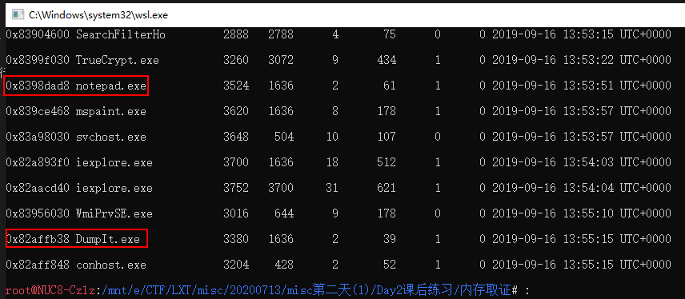
发现notepad.exe与DumpIt.exe。
开始估计flag应当在这两个程序内存中的其中一个。
1 | volatility -f mem.raw --profile Win7SP1x86_23418 memdump -p 3380 -D ./ |
将这两条内存数据dump出来。
1 | strings -e l 3380.dmp | grep flag |
使用strings+grep命令来找flag。可以发现里包含有flag的rar,zip,7z等文件
1 | binwalk 3380.dmp |
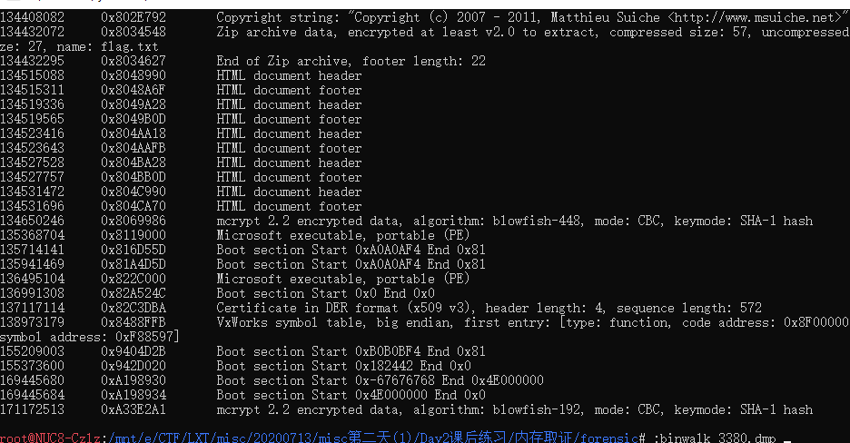
出现一堆文件。分离看看，能不能发现什么。
1 | foremost 3380.dmp |
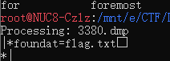
得到了一堆文件。找到一个含有flag.txt的加密压缩包。
不知道密码，一边暴力破解，一边找找其它线索。
找到解压密钥
直接在内存中搜索文件
1 | volatility -f mem.raw --profile Win7SP1x86_23418 filescan | grep -E "png|jpg|gif|zip|rar|7z|pdf" |
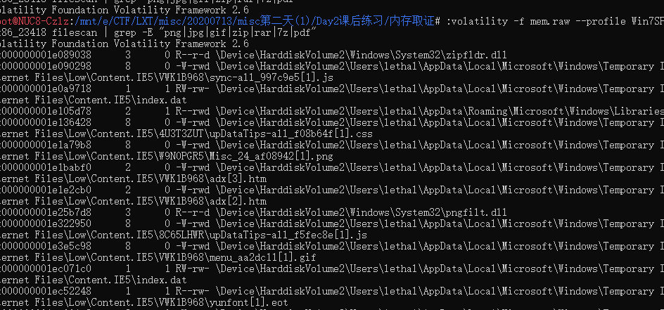
1 | 0x000000001efb29f8 8 0 R--r-d \Device\HarddiskVolume2\Users\lethal\Pictures\无标题.png |
发现一条比较异类的文件。
1 | volatility -f mem.raw --profile Win7SP1x86_23418 dumpfiles -D ./ -Q 0x000000001efb29f8 |
从内存中把内存数据中dump出来，改个名。
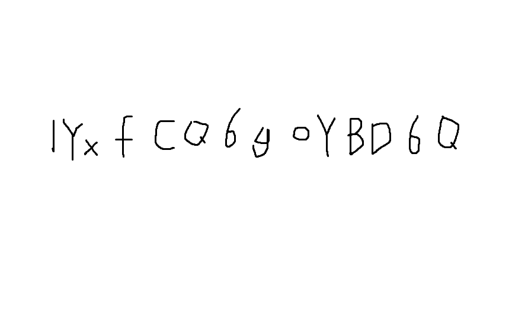
估计这个应当是密钥。
打开压缩文件输入1YxfCQ6goYBD6Q拿到flag
RoarCTF{wm_D0uB1e_TC-cRypt}